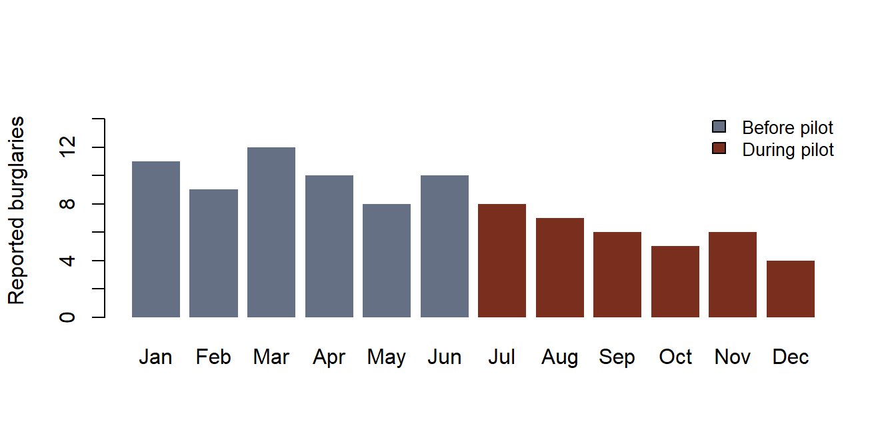

Small Changes, Safer Neighborhoods: A Fictional Case Study
Lessons from a Neighborhood Problem-Solving Program
Keywords
Community policing, Problem-oriented policing, Program implementation, Neighborhood safety
A recurring neighborhood problem
This fictional case study demonstrates the Practice & Experience publication category. All events, people, organizations and figures are invented.
At the fictional Sample City Police Department, our team was responding to repeated complaints about vehicle burglaries in a residential neighborhood. Residents were frustrated, and officers were returning to the same locations week after week. We wanted to try something beyond responding to individual reports.
Our goal was straightforward: reduce reported vehicle burglaries and improve communication with residents without creating a major new demand on patrol resources.
Starting small
We launched a six-month Neighborhood Partnership Pilot. Rather than creating a new unit, we assigned two existing officers to coordinate the effort alongside their regular duties. A crime analyst helped identify recurring locations, while neighborhood representatives shared concerns about lighting and parking areas.
The program combined three activities:
- Short, targeted patrols informed by recent incident reports.
- Meetings with residents and property managers to address recurring safety concerns.
- Monthly reviews of incident reports and progress on environmental improvements.
We also worked with property managers to repair broken lighting and improve visibility around shared parking areas. Residents received practical reminders about securing vehicles and reporting incidents.
What we learned along the way
Our first meetings attracted few residents. Holding them at more convenient times and sharing brief updates through existing neighborhood communication channels helped improve participation.
We also learned that assigning responsibility mattered. Early requests for lighting repairs were not consistently followed up. A simple shared action log, with a named person responsible for each task, helped keep the work moving.
Results after six months
By the end of the pilot, reported vehicle burglaries had fallen from 60 in the preceding six months to 36 during the program. The team also completed 12 of 15 identified environmental improvements.
| Measure | Before pilot | During pilot |
|---|---|---|
| Reported vehicle burglaries | 60 | 36 |
| Neighborhood meetings | 0 | 6 |
| Environmental improvements completed | 0 | 12 |
The 40% decline met our fictional program goal. However, the comparison alone could not establish that the program caused the improvement. Seasonal changes and other factors may have contributed. We recommended continuing the pilot while monitoring longer-term trends and comparing results with similar neighborhoods.
Lessons for other agencies
The most useful lesson was that a new program does not necessarily require a new unit or a large budget. Clear responsibilities, regular communication and a manageable set of goals can help an agency turn an idea into a workable initiative.
Start with one problem, involve the people affected by it, and keep track of both the work performed and the results. Make adjustments when something is not working.
Looking ahead
In this fictional scenario, the department decided to continue the program for another six months before considering expansion. The experience illustrates how a small pilot can provide a practical starting point for improving neighborhood safety.
Publication Information and Disclosures
Acknowledgments
The authors thank the officers, professional staff, community partners, and residents who supported the development and implementation of the Neighborhood Partnership Pilot. Their participation and feedback helped shape the program.
Funding
No external funding was received for the preparation of this article. The program was implemented using existing departmental resources.
Conflicts of Interest
The authors declare no financial or personal conflicts of interest related to this contribution.
Disclaimer
The authors contributed in their individual professional capacities. The views, opinions, interpretations, and recommendations expressed are those of the authors and do not necessarily reflect the official policies, positions, or views of their employers, affiliated organizations, or the El Paso Crime Lab.
Professional affiliations are provided for informational purposes and do not imply organizational endorsement or approval of the publication.
Confidentiality
This article does not disclose personally identifiable information, confidential records, or sensitive operational information.
Copyright and License
Copyright © 2026 by the authors.
This article is distributed under the Creative Commons Attribution-NoDerivatives 4.0 International License (CC BY-ND 4.0). Readers may share and redistribute the article in its original form, including for commercial purposes, provided appropriate credit is given and a link to the license is included.
License: https://creativecommons.org/licenses/by-nd/4.0/
The Police Journal
An EPCL Publication
El Paso, Texas, United States
Article ID: PJ-2026-000
Volume 1, Number 000
November 2026
Research • Innovation • Practice
Display sample: The disclosures above illustrate how an actual contribution may be presented. All authors, organizations, program activities and results are fictional. This sample has not undergone editorial review.